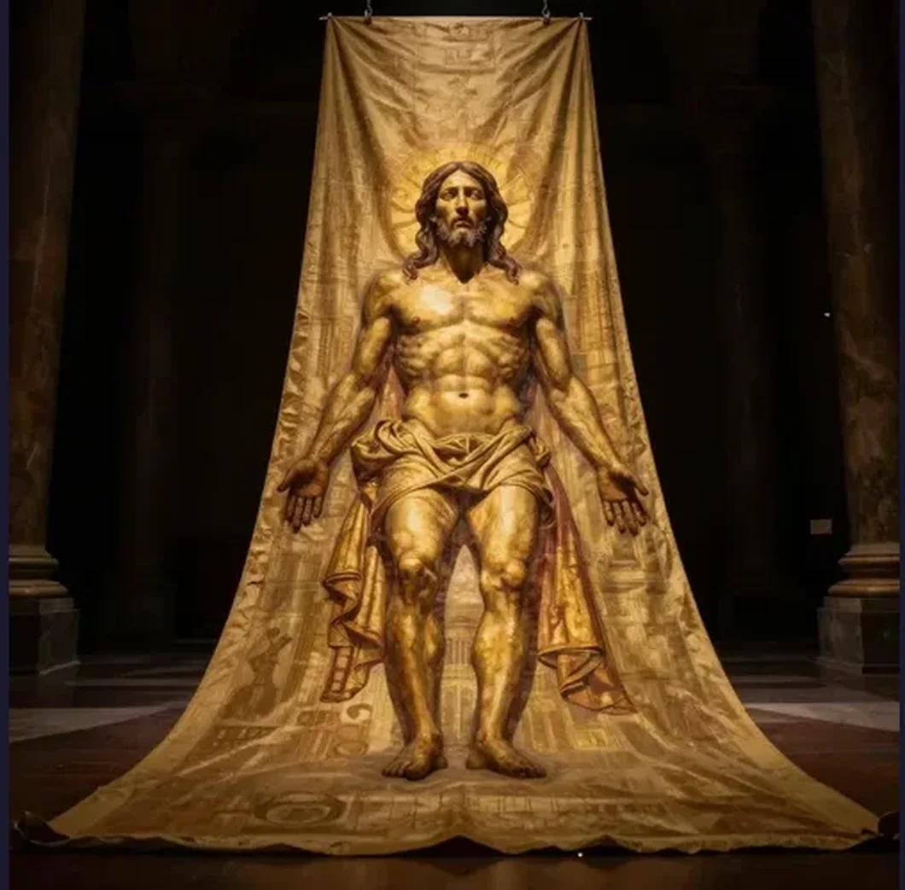

Shroud of Turin: The 14-Foot Linen That Science Still Can't Explain

In a climate-controlled case inside the Cathedral of Saint John the Baptist in Turin, Italy, lies a length of linen cloth that has inspired more scientific scrutiny, religious devotion, and furious debate than perhaps any other object on Earth. The Shroud of Turin measures approximately 4.4 meters long by 1.1 meters wide (14.3 by 3.7 feet), and on its surface, in faint amber-brown tones, is the front and back image of a crucified man — his hands crossed over his pelvis, his eyes closed, his body bearing the marks of a brutal execution. Whip lashes on the back. Nail wounds in the wrists and feet. A puncture wound in the side. Blood pooled around the scalp in patterns consistent with a crown of thorns.
For centuries, millions of Christians have venerated the Shroud as the actual burial cloth of Jesus of Nazareth, the linen wrap described in the Gospels that covered his body in the tomb. Scientists have spent decades trying to determine whether the image is a miraculous imprint, a natural phenomenon, or a medieval forgery. The answer, after more than a century of increasingly sophisticated testing, remains astonishingly unclear. Every time one side of the debate seems to have won, new evidence emerges to reopen the question. The Shroud of Turin is not merely a religious relic. It is a scientific puzzle of the first order — an object that has been subjected to radiocarbon dating, spectroscopic analysis, blood chemistry tests, pollen analysis, textile studies, and computational image processing, and still refuses to yield a definitive answer.
The Shroud first appears in the historical record in the 1350s, when a French knight named Geoffrey de Charny displayed it in a church he founded in the small town of Lirey, France. De Charny never explained how he acquired it. A local bishop later declared it a forgery, and for centuries the Shroud circulated among European nobility, eventually landing in Turin in 1578, where it has remained ever since. In December 1532, the Shroud narrowly escaped destruction when a fire broke out in the Sainte-Chapelle in Chambéry, France, where it was stored in a silver reliquary. The heat melted the silver, and molten metal burned through the folded linen in several places, creating a distinctive pattern of triangular burn holes and scorch marks still visible today. The Shroud was doused with water to extinguish the flames, and later repaired by nuns who sewed patches over the damaged areas. Some researchers have argued that the water, smoke, and heat from the 1532 fire could have affected subsequent radiocarbon dating results by introducing carbon contaminants.
Everything changed in May 1898. An Italian amateur photographer named Secondo Pia was given permission to photograph the Shroud during a public exhibition. When he developed the glass-plate negatives in his darkroom, he was stunned. The photographic negatives revealed something invisible to the naked eye: the image on the Shroud was itself a negative. When reversed, the faint, murky marks resolved into a detailed, anatomically precise image of a man — far clearer and more detailed than what could be seen on the cloth itself. The implications were electrifying. A negative image implied a level of sophistication that seemed difficult to attribute to a medieval forger working in the 1350s, decades before photography was invented. The Secondo Pia photographs launched the modern scientific investigation of the Shroud.
In 1988, the Vatican finally granted permission for radiocarbon dating of the Shroud. Samples were cut from a corner of the cloth and sent to three independent laboratories: the University of Oxford, the University of Arizona, and the Swiss Federal Institute of Technology (ETH) in Zurich. The results, published in the journal Nature in 1989, were devastating to believers: all three laboratories dated the cloth to between 1260 and 1390 CE, with a 95% confidence interval. This placed the Shroud squarely in the medieval period, consistent with its first documented appearance in the 1350s. The media declared the case closed.
But almost immediately, questions arose about the testing methodology. The most persistent criticism centers on where the sample was taken: a single corner of the cloth, specifically chosen because it was already damaged. In 2000, researchers Sue Benford and Joseph Marino published an analysis arguing that this corner area contained medieval repair threads woven into the original fabric — an “invisible reweave” of the type commonly practiced in medieval textile repair. If the sample contained a mixture of original first-century linen and medieval repair thread, the radiocarbon date would fall somewhere in between, exactly as the 1988 results indicated. Critics of the 1988 test also point out that the corner was the area most contaminated by centuries of handling, the 1532 fire, and various environmental exposures. No radiocarbon-dating expert has formally endorsed the medieval repair theory, and the 1988 results remain the scientific consensus. But the controversy has never fully subsided, and no new samples have been permitted for testing.
A separate relic known as the Sudarium of Oviedo, a face cloth kept in the Cathedral of San Salvador in Oviedo, Spain, has been linked to the Shroud through forensic analysis. The Sudarium has a documented history traceable to the 7th century — far earlier than the Shroud’s 1350s appearance — and bears bloodstain patterns that some researchers claim match the facial blood patterns on the Shroud of Turin. The blood type on both cloths has been reported as type AB. If both covered the same body, it would imply the Shroud predates the medieval period. However, this connection remains debated.
Long before the 1988 radiocarbon tests, the Shroud had been the subject of intense scientific interest. The most ambitious investigation was the Shroud of Turin Research Project (STURP), a team of approximately 30 American scientists who conducted 120 continuous hours of testing in Turin in October 1978, bringing several tons of equipment and working in shifts around the clock for five days. STURP’s findings were extraordinary. The most important conclusion was stated plainly: the image is not painted. No pigments, no brush strokes, no artists’ materials of any kind were found on the image areas. Spectroscopic analysis showed that the image resulted from surface oxidation and dehydration of the linen fibers — the topmost layer of fibers had been chemically altered in a way that darkened them, but only to a depth of about 200 nanometers, roughly one-fifth the thickness of a human hair. The bloodstains, however, were confirmed as real blood — specifically, hemoglobin and other blood components — not paint or pigment. The blood appears to have been on the cloth before the body image formed, since the image does not appear under the bloodstains. This detail is significant: a forger would have had to apply real blood first and then create an image around it, adding another layer of complexity to any hypothetical forgery.
Swiss criminologist Max Frei analyzed sticky-tape samples taken from the Shroud’s surface and identified pollen grains from plant species native to the Judean desert, Anatolia, and Europe — consistent with a cloth that had traveled from the Middle East through the Byzantine Empire to Western Europe. The image also has remarkable 3D encoding properties: when processed through a VP-8 image analyzer, the intensity of the image correlates with cloth-to-body distance, producing a three-dimensional relief — something no known painting or photograph does.
The question of how the image was created remains the central mystery. The Maillard reaction hypothesis suggests that ammonia and other gases released by a decomposing body reacted with trace substances on the linen surface, creating the image through a chemical process. This is plausible but has not been demonstrated to produce an image of comparable quality. The radiation burst hypothesis proposes that a brief, intense emission of energy scorched the surface fibers. In 2022, Italian researchers using wide-angle X-ray scattering concluded that the Shroud’s linen showed characteristics consistent with ancient rather than medieval aging, adding fuel to this theory. The medieval forgery hypothesis remains the simplest explanation, but no one has successfully replicated the Shroud’s specific characteristics using known medieval materials and methods. The image’s superficiality, its negative quality, and its 3D spatial encoding remain stubbornly difficult to reproduce.
The Shroud of Turin sits at a unique intersection of science, faith, and history. The 1988 radiocarbon date says medieval. The STURP analysis says the image is not painted. The blood chemistry says real blood. The negative-image quality says something beyond medieval capability. Each line of evidence points in a slightly different direction, and no single theory accounts for all of them simultaneously. Perhaps the Shroud is the most sophisticated forgery in human history, created by a genius whose techniques have never been equaled or explained. Perhaps it is something else entirely — a natural phenomenon we do not yet understand. What makes the Shroud compelling is not that it proves or disproves any particular belief, but that after a century of the most intensive scientific scrutiny any object has ever received, it still has not given up its secret. In an age where we can date rocks on Mars and sequence the DNA of Neanderthals, a simple piece of linen continues to resist our best efforts to classify it.
References & Further Reading
Shroud.com: The 1978 Scientific Examination — STURP investigation overview and findings
Shroud of Turin Official: STURP — Team composition, methodology, and conclusions
ASNT: The Mysteries of the Shroud of Turin — Nondestructive testing perspective on image analysis
Wikipedia: Sudarium of Oviedo — The companion face cloth and its potential connection to the Shroud
📚 Recommended Reading: History's Greatest Mysteries: the Shroud of Turin (on Amazon) — As an Amazon Associate, we earn from qualifying purchases.
Editorial note: The Shroud of Turin is documented through Vatican records, STURP scientific publications, and peer-reviewed radiocarbon dating studies. See our Editorial Policy.